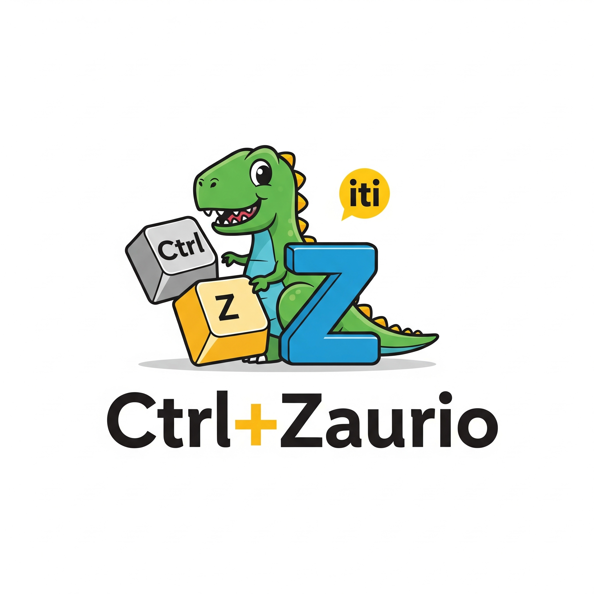

Te ayuda a llevar la cuenta de tu partida física de Draftosaurus. Registra los dinosaurios que colocas en tu tablero y calcula los puntos automáticamente al final del juego. ¡Ideal para facilitar la puntuación y validar reglas!
Modo Juego Digital:
Te permitirá jugar una partida completa de Draftosaurus directamente en tu dispositivo, siguiendo todas las reglas del juego base.
Sobre Ctrl+Zaurio

¡Excavando el futuro de la informática, un byte a la vez!
Somos Ctrl+Zaurio, una empresa de desarrollo de software formada por estudiantes del Instituto Tecnológico de Informática (ITI CETP), con una pasión por crear soluciones innovadoras y experiencias de usuario memorables.
Nuestra misión es aplicar los conocimientos adquiridos de nuestra formación en el ITI para desarrollar proyectos creativos y funcionales mediante el trabajo en equipo, el aprendizaje continuo y en enfrentar cada desafío que se nos proponga, tal como nos enseño el Instituto.
Este proyecto sobre "Draftosaurus", es un reflejo de nuestro compromiso en la informática y el entretenimiento, facilitando la diversión y la estrategia para jugadores como tú.
Gracias por explorar nuestro trabajo. ¡Esperamos que disfrutes la aplicación!